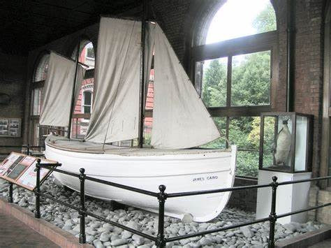

<ons-page id="gallery.html">
  <style>
    .gallery-image {
      width: 100%;
    }
  </style>

  <script>
  </script>

  <ons-toolbar id="picture-toolbar">
    <div class="left">
      <ons-back-button></ons-back-button>
    </div>
  </ons-toolbar>

  <ons-carousel id="carousel" fullscreen swipeable auto-scroll auto-scroll-ratio="0.1">
      <ons-carousel-item style="background-color: #085078;">
      <div style="text-align: center; font-size: 30px; margin-top: 20px; color: #fff;">
        
        <p style='align:center;color:white'>Ernest Shackleton</p>
      </div>
    </ons-carousel-item>

    <ons-carousel-item style="background-color: #085078;">
      <div style="text-align: center; font-size: 30px; margin-top: 20px; color: #fff;">
        
        <p style='align:center;color:white'>James Caird</p>
      </div>
      
    </ons-carousel-item>
  </ons-carousel>
</ons-page>
